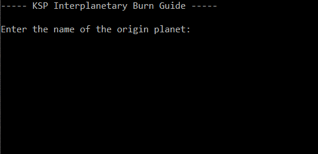

The calculator I made for Kerbal Space Program used values from the game’s wiki, including: mass of planets, size of their sphere of influence and radius. Using these and some basic physics, the phase angle (the angle from one planet to another) was calculated. Allowing users to perform a Hohmann Transfer orbit between location and destination, using the minimum delta-v.
I developed a bespoke multi-stage plain text encryption system. Here characters are converted into ASCII numbers before revisable mathematical operations are performed on the text. As long as two users know the key, they can encrypt, send and decrypt secret messages.
Web design is a new passion of mine, I’ve spent many late nights learning to build modern and responsive webpages with interactive JavaScript elements. Like this cocktail website shown below. Web design makes up the bulk of my freelance work and is something I am now rather practiced in. I build all my CSS and am not reliant on frameworks, but can work with Bootstrap and Toast if it is required!